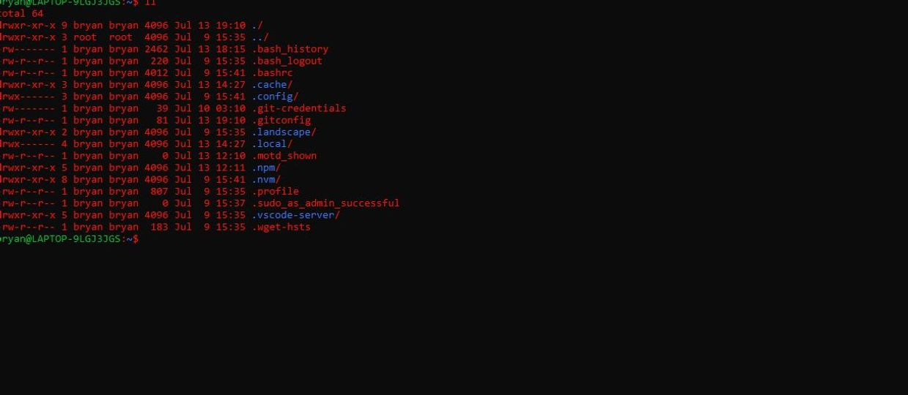
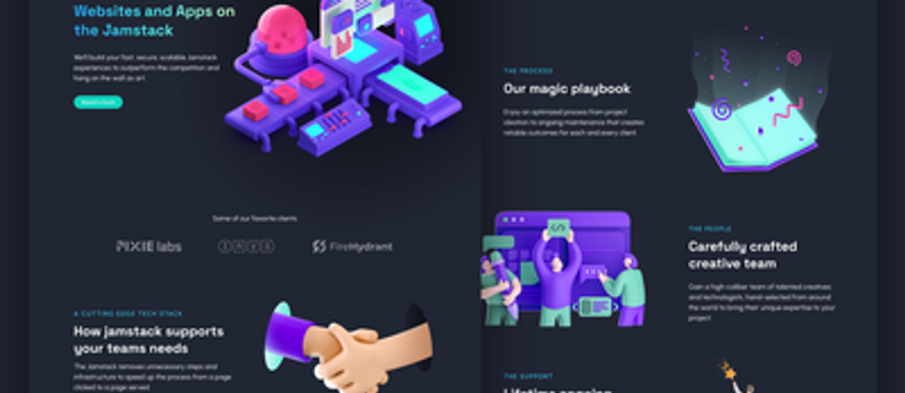

Blog.
Bryan Guner Content Posting Blog
Next.js
and
Sanity.io
.
JavaScript Basics
September 1, 2021
Bryan Guner
More Stories
A Step-by-Step Guide: Deploying on Netlify
September 1, 2021
Bryan Guner
Recursion & The Stack
August 12, 2021
Bryan Guner
React in Depth: A Comprehensive Guide
August 2, 2021
Bryan Guner
Backend Python Part 2
July 27, 2021
Bryan Guner

Add Folder To Path In Linux
July 13, 2021
Bryan Guner
Typescript For Javascript Developers
June 30, 2021
Bryan Guner
What is a Redux Reducer?
June 22, 2021
Bryan Guner

Jamstack Foundational Concepts
June 22, 2021
Bryan Guner
Emerging Web Technologies
June 22, 2021
Bryan Guner
Browser Based Integrated Development Environments & Playgrounds
June 21, 2021
Bryan Guner
Github Repositories That Will Teach You How To Code For Free
June 21, 2021
Bryan Guner
The Harmonic Series & Fourier Transform
June 10, 2021
Bryan Guner
Object Methods
October 23, 2020
Bryan Guner
Useful Tools
September 1, 2020
Bryan Guner
Data Structures
August 1, 2020
Bryan Guner
WebDevSetup
No date
Bryan Guner
React Forms
No date
Understand how structured data works
No date
Bryan Guner
My Favorite VSCode Themes
No date
Bryan Guner
Reducing Big O Complexity In Javascript
No date
Bryan Guner
Backend Python Part 1
No date
Bryan Guner
Building Up To React
No date
Bryan Guner
List of things you can embed in your website
No date
Bryan Guner
How to use Google Sheets As Your Website Database
No date
Bryan Guner
Intro React
No date
Bryan Guner
Getting started with SEO for beginners
No date
Bryan Guner